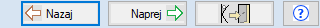
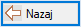

PRVI ZAGON PROGRAMA
V prvem zagonu programa boste kreirali podatkovno bazo.
Program vas bo vodil skozi vse nastavitvene procedure. Sredi dialoga "Izberi", ki je prikazan pred vami se nahajajo
tako imenovani Navigacijski gumbi.

Navigacijski gumbi
Nazaj
Tekom instalacije programa Tangenta.EXE se večkrat, ne pa vedno, prikaže gumb Nazaj.
S klikom na gumb Nazaj, gremo korak nazaj v instalaciji programa Tangenta.
Gumb nazaj rabimo, kadar smo ugotovili, da smo se v prejšnjem koraku zmotili, oziroma smo ugotovili, da bi morali vnesti drugačne podatke.
V nekaterih slučajih, ko bi korak Nazaj pomenil izbris prevelike količine že vnešenih podatkov in nastavitev se gumb
Nazaj ne pojavi, pač pa samo gumb za Naprej in za Izhod iz programa.
V kolikor smo v takšni situaciji ugotovili, da smo se v prejšnih podatkih zmotili, gumba za Nazaj pa ni na dialogu,
vam predlagamo, da prekinete namestitev programa Tangenta s klikom na gumb Izhod iz programa, program tangenta pa ponovno
zaženete v komandni vrstici s parametrom /RESETNEW.
Naprej

S klikom na Gumb Naprej gremo korak naprej v namestitvi programa Tangenta.
Izhod

S klikom na gumb Izhod, se bo naprjej prikazal dialog, z vprašanjem ali želimo zares konačti program.
V kolikor kliknem da, se bo namestitev programa Tangenta končala.
V kolikor program Tangenta potem ponovno zaženemo brez parametrov v komandni vrstici, se bo namestitev nadaljevala tam
kjer se je prej končala.
Gumb za pomoč
S klikom miške na Gumb za pomoč, se prikaže pomoč ki je na Internetu.